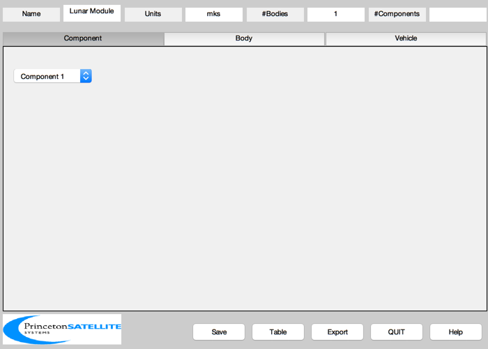
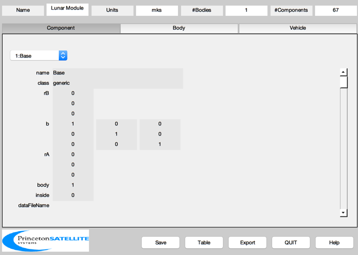
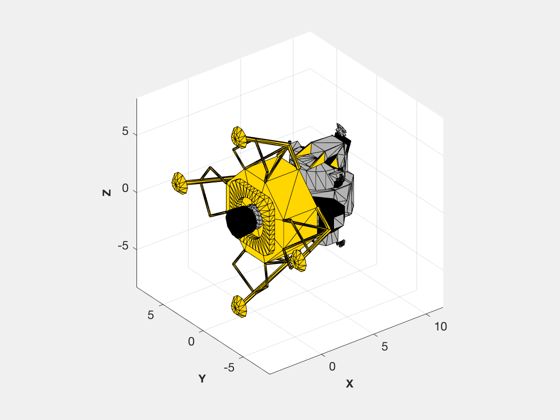

Generates a lunar module model.
This combines the ascent and descent vehicles.
Data:
- CSM Orbit 54 x 66 nm lunar orbit - LM does delta-V to an 8 by 60 nm elliptical orbit - Contact probes are 68 inches - Engine 6 deg gimbal to handle ACS and CM offset - Engine throttle between 1050 and 6300 lbf Max thrust is 9,870 lbf - RCS 100 lb thrust - Aerozine 50 and nitrogen tetroxide.
The weight breakdown is as follows:
Ascent stage, dry 4,804 lb Includes water and oxygen; no crew Descent stage, dry 4,483 lb RCS propellants (loaded) 604 lb DPS propellants (loaded) 18,100 lb APS propellants (loaded) 5,214 lb Total weight 33,205 lb
------------------------------------------------------------------------ See also BuildCADModel, CreateBody, CreateComponent, Inertias, LunarModuleFirstStage, LunarModuleSecondStage, Constant ------------------------------------------------------------------------
Contents
%--------------------------------------------------------------------------- % Copyright (c) 2002 Princeton Satellite Systems, Inc. % All rights reserved. %---------------------------------------------------------------------------
Load in the model
%------------------ cD = LunarModuleFirstStage; cA = LunarModuleSecondStage; %+Y becomes -Z %+X becomes -Y %+Z becomes +X bLM = [0 0 1;-1 0 0;0 -1 0]; for j = 1:length(cA) cA(j).v = (bLM*cA(j).v')'; end for j = 1:length(cD) cD(j).v = (bLM*cD(j).v')'; end
Use the CAD interface
%---------------------- mass = 33205/2.205; ftToM = 12*0.0254; lbFToN = Constant('lb force to n'); inertia = Inertias( mass, [(14+1/12)*ftToM (22+11/12)*ftToM], 'cylinder', 1 ); BuildCADModel( 'initialize' ); BuildCADModel( 'set mass', struct( 'mass', mass, 'inertia', inertia, 'cM', [0;0;0] ) ); BuildCADModel( 'set name' , 'Lunar Module' ); BuildCADModel( 'set units', 'mks' ); BuildCADModel( 'add qecitobody', [1;0;0;0] ); BuildCADModel( 'add qlvlh', [1;0;0;0] ); BuildCADModel( 'add reci', [20000;0;0] ); % For each component, we need to find its origin and displace it so that the % axis of rotation is at the origin %---------------------------------------------------------------------------- m = CreateBody( 'make', 'name', 'Core' ); BuildCADModel( 'add body', m ); % This creates the connections between the bodies %------------------------------------------------ BuildCADModel( 'compute paths' );
Create the individual components
% Assign components to the core %------------------------------ m = CreateComponent( 'make', 'generic', 'faceColor', cD(1).color,... 'vertex', cD(1).v, 'face', cD(1).f,'inside',0,... 'rA', [0;0;0], 'mass', 0, 'name', cD(1).name, 'body', 1 ); BuildCADModel( 'add component', m ); for k = 1:length(cA) m = CreateComponent( 'make', 'generic', 'faceColor', cA(k).color,... 'vertex', cA(k).v, 'face', cA(k).f,'inside',0,... 'rA', [0;0;0], 'mass', 0, 'name', cA(k).name, 'body', 1 ); BuildCADModel( 'add component', m ); end % Descent engine (nozzle) %------------------------ m = CreateComponent( 'make', 'rocket engine', 'faceColor', cD(2).color,... 'vertex', cD(2).v, 'face', cD(2).f,'inside',0,... 'rA', [0;0;0], 'mass', 0, 'name', cD(2).name, 'body', 1,... 'thrustMax', 6300*lbFToN,... 'thrustMin', 1050*lbFToN, 'unitVector', [1;0;0], 'scale', 1/1024 ); BuildCADModel( 'add component', m ); % Thrusters %---------- thrust = ones(1,12); iBit = 0.02*thrust; uQuad = -[ 1 -1 0 0;... 0 0 1 0;... 0 0 0 1 ]; scale = (10 + 7/12)*12*0.0254/38; % (+y,+z), (-y,+z) (-y,-z) (+y,-z) %-------------------------------- angle = [-10 100 180 -90]*pi/180; cA = cos(angle); sA = sin(angle); x = 68*scale; z = [32 32 34 34]*scale; y = [37 37 37 37]*scale; ySign = [ 1 -1 -1 1]; zSign = [ 1 1 -1 -1]; i = 0; uThruster = zeros(3,16); rThruster = zeros(3,16); for j = 1:4 r = [x;y(j)*ySign(j);z(j)*zSign(j)]; b = [1 0 0; 0 cA(j) -sA(j);0 sA(j) cA(j)]; for k = 1:4 m = CreateComponent( 'make', 'onoff thruster', 'model', 'lm', ... 'name', sprintf('Thruster %i',k + (j-1)*4), 'body', 1,... 'unitVector', b*uQuad(:,k), 'rA', r,'thrustCoefficient',448,... 'positionVector', r,'valveHeaterPower', 8, 'inside',0 ); BuildCADModel( 'add component', m ); i = i + 1; uThruster(:,i) = b*uQuad(:,k); rThruster(:,i) = r; end end kN = [2 6 10 14]-1; kP = [3 7 11 15]-1; torqueP = 448*sum(cross(rThruster(:,kP),uThruster(:,kP)),2); torqueN = 448*sum(cross(rThruster(:,kN),uThruster(:,kN)),2); % Fuel tank %---------- diameterTank = 2; volumeTank = (4/3)*pi*(diameterTank/2)^3; % m3 densityFuel = 1000; % hydrazine massFuel = 18100/2.205; m = CreateComponent( 'make', 'fuel tank', 'radius', diameterTank/2, 'rA', [0;0;0],... 'name', 'Fuel Tank', 'body', 1, 'inside', 1, ... 'volume', volumeTank, 'massPressurant', 0.0729, ... 'rPress', 2078.65,'massFuel', massFuel,'mass',6,... 'densityFuel', densityFuel,'temperatureTank', 300); BuildCADModel( 'add component', m );
The model is finished
%----------------------- g = BuildCADModel( 'get cad model' ); DrawCAD(g); ExportCAD(g,'LunarModule') SaveStructure(g,'LunarModule') %--------------------------------------